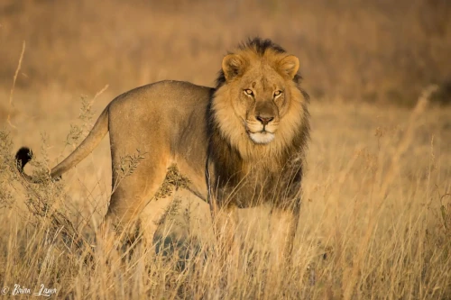
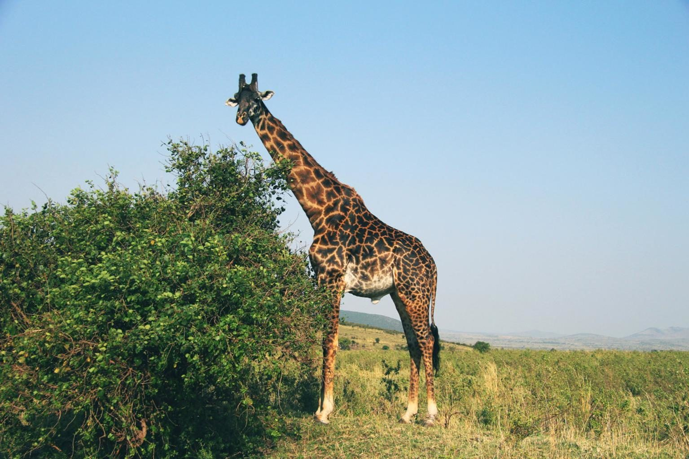
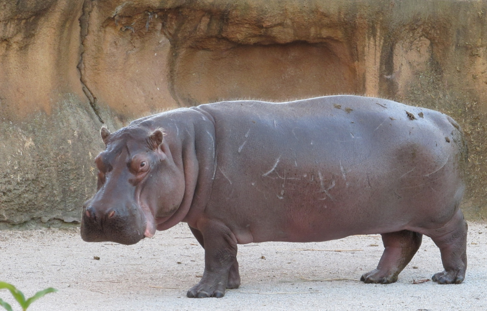
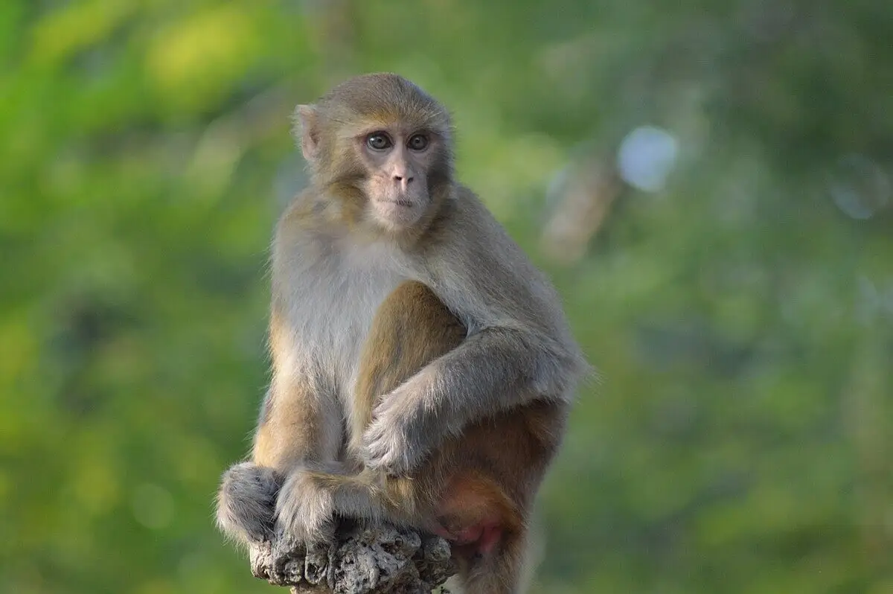
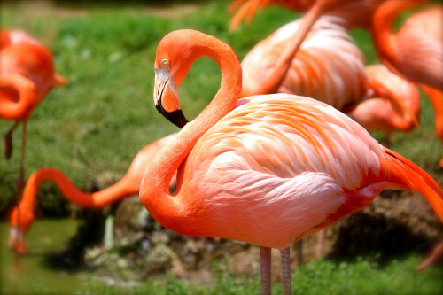

Vamos explorar alguns dos animais incríveis que vivem no zoológico da nossa cidade!
Leão

O leão é conhecido como o "rei da selva" devido à sua majestade e força. Eles vivem em grupos chamados de bandos e são encontrados principalmente na África, logo abaixo do deserto Saara.
Girafa

A girafa é o animal terrestre mais alto do mundo, conhecida por seu pescoço longo e manchas distintas. Elas são encontradas em savanas e florestas abertas na África.
Elefante
O elefante é o maior animal terrestre do mundo, conhecido por sua inteligência e memória excepcionais. Eles são encontrados em várias regiões da África e da Ásia.
Hipopótamo

O hipopótamo é um grande mamífero semi-aquático conhecido por seu corpo robusto e boca enorme. Eles passam a maior parte do tempo na água para se manterem frescos e são encontrados em rios e lagos na África.
Macaco

Os macacos são primatas inteligentes e sociais, conhecidos por sua habilidade de usar ferramentas e resolver problemas. Eles são encontrados em várias regiões do mundo, principalmente em florestas tropicais.
Rinoceronte
O rinoceronte é um grande mamífero conhecido por seu corpo robusto e chifres distintos. Eles são encontrados em várias regiões da África e da Ásia, principalmente em savanas e florestas.
Flamingo

O flamingo é uma ave conhecida por sua plumagem rosa vibrante e pernas longas. Eles são encontrados em lagoas, lagos salgados e áreas costeiras em várias partes do mundo.